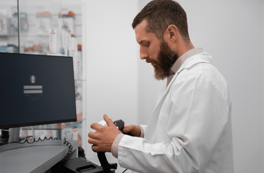

О нашей клинике
Мы предоставляем лучшие медицинские анализы с использованием современных технологий.
Наши Специалисты в сфере Лабораторной диагностики
Доктор Иванов А.И.

Специализация: Лабораторная диагностика
Доктор Петрова А.В.

Специализация: Лабораторная диагностика
Доктор Сидорова Н.С.

Специализация: Лабораторная диагностика
Доктор Кузнецов Д.М.
Специализация: Лабораторная диагностика
Доктор Смирнов Е.В.

Специализация: Лабораторная диагностика
Сертификаты нашей клиники
- Лицензия на медицинскую деятельность
- Сертификат по лабораторной диагностике